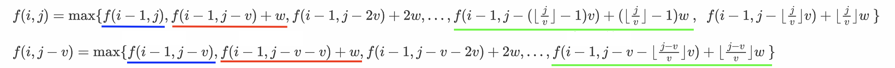

基础形式
\(N\) 件物品，体积分别为 \(v_i\)，价值分别为 \(w_i\)，有一个容积为 \(V\) 的背包。如何使背包所装的物品总价值最大？（背包不一定装满）
本质上就是：有限制条件下的利益最大化问题。
0-1背包¶
特点：每种物品只有 \(1\) 个。
依次枚举每件物品，当枚举到第 \(i\) 件物品时，令 \(f(i, j)\) 表示：在总体积不超过 \(j\) 的前提下，在前 \(i\) 件物品中所能得到的最大总价值。问题的答案就是 \(f(N,V)\)。
对 \(f(i,j)\) 的理解
\(f(i, j)\) 可从两个角度来考虑：
- \(f(i, j)\) 代表的是一个集合： 在总体积不超过 \(j\) 的前提下，在前 \(i\) 件物品中进行挑选的所有选法的集合。
- \(f(i, j)\) 值代表的是这个集合的一种属性：集合中所有选法的总价值中的最大值。
\(f(i,j)\) 包含的方案可分为 \(2\) 类：
- 不选第 \(i\) 件物品：\(f(i-1, j)\)
- 选第 \(i\) 件物品（该类不一定存在，只有当 \(v_i\le j\) 时该类才存在）：\(f(i-1, j-v_i)+w_i\)
递推的初始条件为：\(f(0,j)=0\)，\(f(i,0)=0\)。
注意
在二维的处理方法中，“先枚举体积”或“先枚举物品”都可以，因为无论是先遍历体积还是先遍历物品，求 \(f(i,j)\) 所需要的信息都会在之前被求出来。
优化为一维¶
我们定义的状态 \(f(i,j)\) 可以求得任意合法的 \(i\) 与 \(j\) 下的最优解，但题目只需要求得最终状态 \(f(N,V)\)，因此我们没有必要存储这么多信息。注意到：\(f(i,...)\) 只受 \(f(i-1,...)\) 影响，因此我们可以不使用二维数组，而只用一维数组，不停覆盖存储即可。
用 \(f(j)\) 表示 \(N\) 件物品在容积为 \(j\) 时可放入的最大总价值，最终答案就是 \(f(V)\)，将问题转化为一维。对于体积 \(j\)，当枚举到物品 \(i\) 时，我们需要判断：装入 \(i\) 是否会带来总价值的提高。若总价值会提高，则更新 \(f(j)\) 的值。
注意
由于数组只有一维，因此我们需要特别关注枚举的顺序，避免修改的数据会对后面的数据产生影响。此处应采用从大到小枚举体积，以保证一个物品不会被多次装入背包。
枚举到物品 \(i\) 时，若我们从小到大枚举体积，假设现在枚举到了体积 \(v_1\)（\(v_1\ge v_i\)），因为物品 \(i\) 的出现，导致 \(v_1\) 体积下的总价值发生了变化，即：将 \(i\) 装入，修改 \(f(v_i)\)。随后又枚举到了较大的体积 \(v_2\)，可能有：\(f(v_2)=f(v_1)+w\)，\(f(v_2)\) 发生改变。在这种情况下，体积 \(v_2\) 中装入了 2 个物品 \(i\)，违背了条件，因此这种遍历方式是错误的。
错误的原因的就在于：前面修改的信息对后面产生了影响。在物品 \(i\) 的这一轮迭代中，求 \(f(v_2)\) 时应基于前面 \(1\sim i-1\) 轮迭代所得的结果上（即枚举 \(i\) 之前，\(v_1,v_2,...,v_n\) 所能装入的最大总价值），而此处求 \(f(v_2)\) 时实则用到了本轮迭代新得到的结果 \(f(v_1)\)。
而倒着枚举体积，就保证了计算 \(f(v_2)\) 所用到的较小体积下的最大价值是处理之前 \(1\sim n-1\) 个物品后的结果，与本次迭代无关。
输出方案¶
考虑字典序最小的一个方案，从小到大枚举物品：
- 若物品 \(1\) 在最终方案中，则应满足 \(f[1][V]=f[2][V-v_1]+w_1\)
- 若物品 \(2\) 在最终方案中，则应满足 \(f[2][V']=f[3][V'-v_2]+w_2\)
- ...
完全背包¶
特点：每件物品的数目都足够多。
\(f(i,j)\) 包含的方案可分为 \(k+1\) 类（\(k=\lfloor\dfrac{j}{v_i}\rfloor\)）：
- 物品 \(i\) 装 \(0\) 个：\(f(i-1,j)\)
- 物品 \(i\) 装 \(1\) 个：\(f(i-1,j-v_i)+w_i\)
- ...
- 物品 \(i\) 装 \(k\) 个：\(f(i-1,j-kv_i)+kw_i\)
这些情况的最大值就是\(f(i,j)\)：
时间复杂度：\(O(NV^2)\)
优化¶
求 \(f(i,j)\) 时，需要求出第 \(i\) 件物品拿 \(0,1,...,\lfloor\dfrac{j}{v_i}\rfloor\) 件这 \(k\) 种选法的总价值中的最大值；求 \(f(i,j-v_i)\) 时（前提：\(j\ge v_i\)），需要求出第 \(i\) 件物品拿 \(0,1,...,\lfloor\dfrac{j-v_i}{v_i}\rfloor\) 件这 \(k-1\) 种选法的总价值中的最大值。有：

注意到：\(f(i,j-v_i)\) 与 \(f(i,j)\) 计算过程的后 \(k-1\) 项有关联：

时间复杂度：\(O(NV)\)
多重背包¶
特点：物品 \(i\) 最多只能装 \(s_i\) 个。
与完全背包问题类似，\(f(i,j)\) 包含的方案可分为 \(s_i+1\) 类（不一定都存在）：
- 物品 \(i\) 装 \(0\) 个：\(f(i-1,j)\)
- ...
- 物品 \(i\) 装 \(s_i\) 个：\(f(i-1,j-s_iv_i)+s_iw_i\)
这些情况下总价值是最大值就是 \(f(i,j)\)：
时间复杂度：\(O(NVS)\)
二进制优化¶
在确定物品 \(i\) 拿多少件时，从 0 开始逐一枚举到 \(s_i\) 无疑是很慢的，有没有什么更加高效的枚举方法呢？
将 \(s_i\) 件物品分为若干组，每组个数分别为：\(2^0,2^1,2^2,...,2^k,t\)，满足：
则 \(2^0,2^1,2^2,...,2^k,t\) 中取几个数相加，可以凑出 \([0,s_i]\) 中的任何一个数。
证明
已知 \(2^0,2^1,2^2,...,2^k\) 中取几个相加，可以凑出 \([0,\ 2^{k+1}-1]\) 中的任何一个数（\(k+1\) 位二进制数的表示范围为 \([0,\ 2^{k+1}-1]\)），因此 \(2^0,2^1,2^2,...,2^k,t\) 中取几个数相加，可以凑出 \([0,\ 2^{k+1}-1+t]\) 中的任何一个数，即 \([0,s_i]\) 中的任何一个数。
相当于将 \(s_i\) 个物品 \(i\) 转化为 \(\log s_i\) 个不同物品 \(i_1',i_2',...\) （每种新物品的个数都是 \(1\) 个），通过枚举这些“新物品”的“装或不装”，就可以达到枚举所有种物品 \(i\) “装入个数”的效果。
对所有物品都进行这样的转化操作，最终实现将 \(\sum\limits_{i=1}^ns_i\) 个物品转化为 \(\sum\limits_{i=1}^n\log s_i\) 个“不同物品”。物品 \(i\) 拿多少个转化为拿哪些“新物品”，可见问题转化为 01 背包问题。
时间复杂度：\(O(NV\log S)\) 。
单调队列优化¶
注意
“多重背包”问题并不能像“完全背包”问题那样进行优化。
假设背包能装下 \(s_i+1\) 个物品 \(i\)，则：

画蓝线部分有一定的关联，但这并没有什么用。因为红圈部分的存在使得 \(f(i,j-v)\) 并不只由蓝色部分决定，导致 \(f(i,j)\) 与 \(f(i,j-v)\) 之间就没有什么关系了。
参考链接 （以后有时间再研究T-T）
分组背包¶
特点：物品有 \(n\) 组，每组中有若干个物品，每组中最多只能选一个装入背包。
令 \(f(i,j)\) 表示：总体积不超过 \(j\) 时，前 \(i\) 组物品中所能得到的最大总价值。
判断第 \(i\) 组物品中选哪个（或不选），则 \(f(i,j)\) 可以表示为：